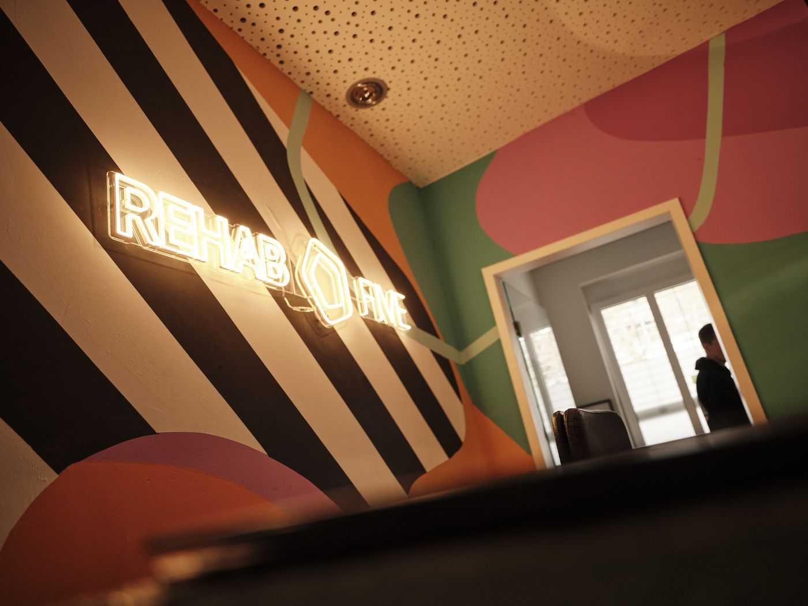
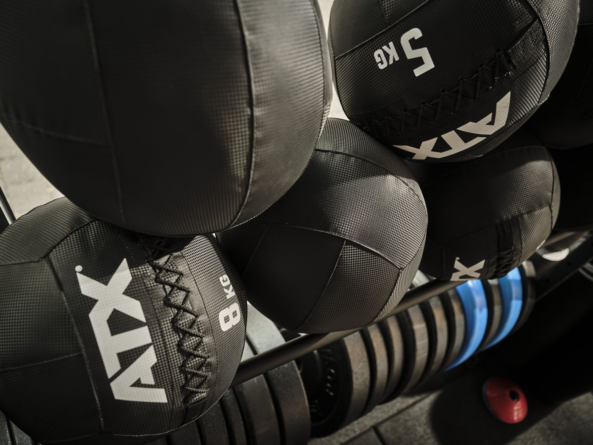
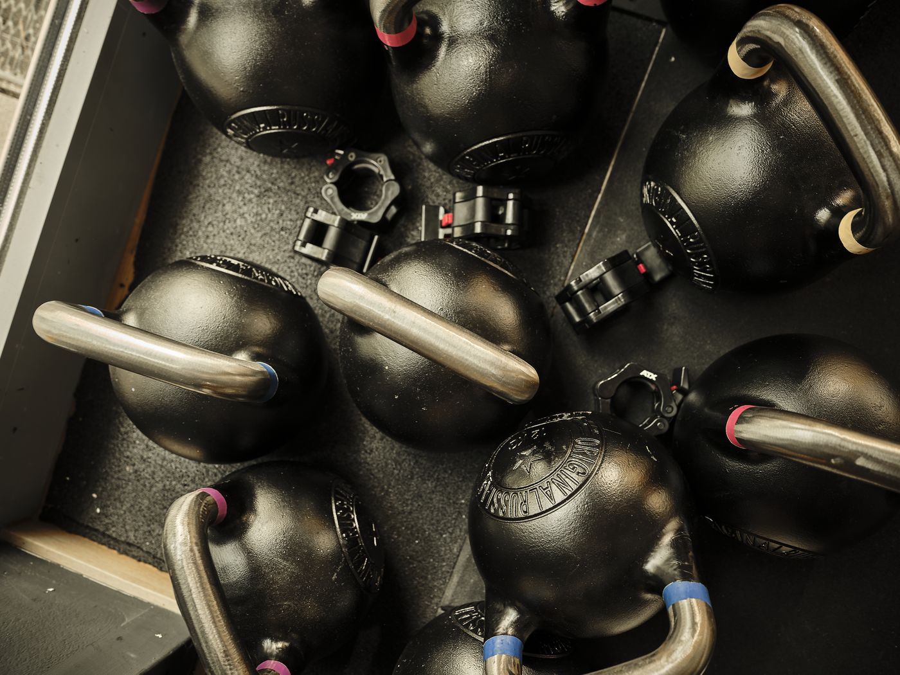
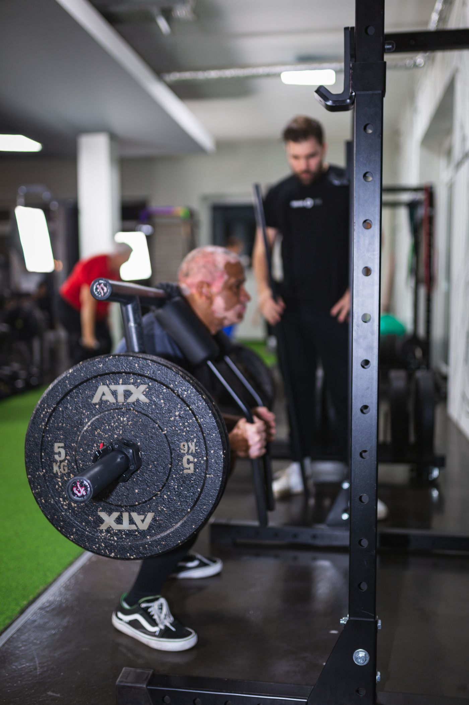
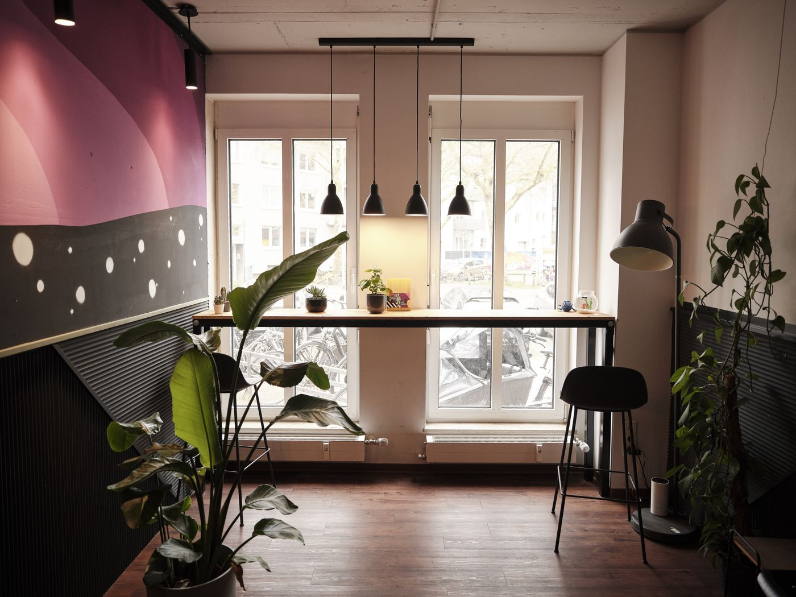
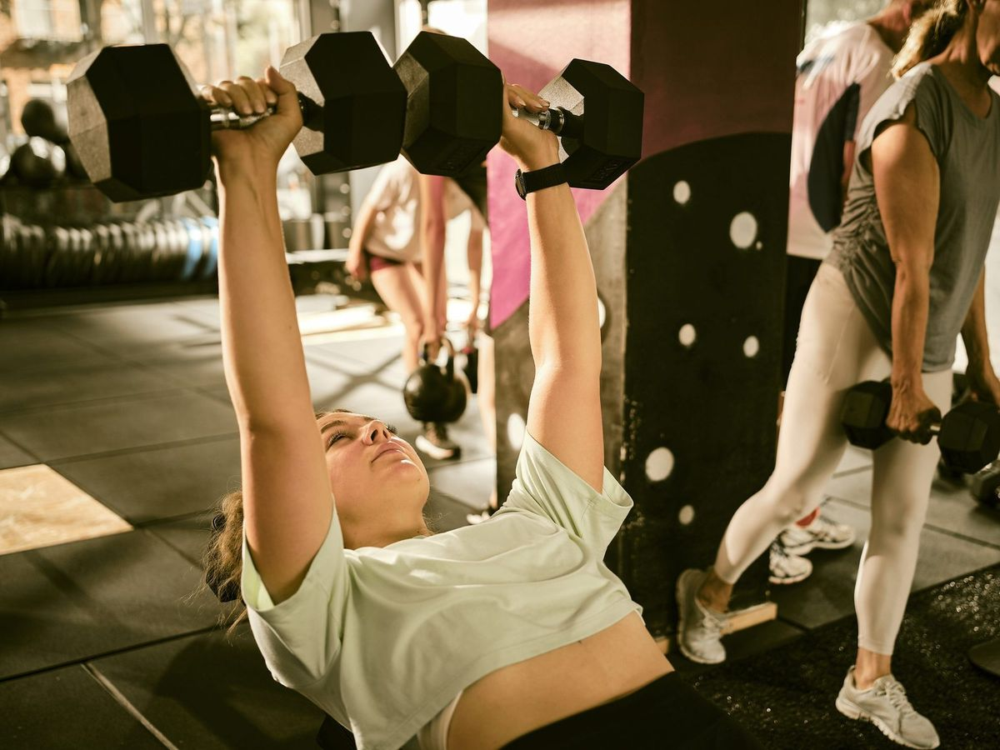
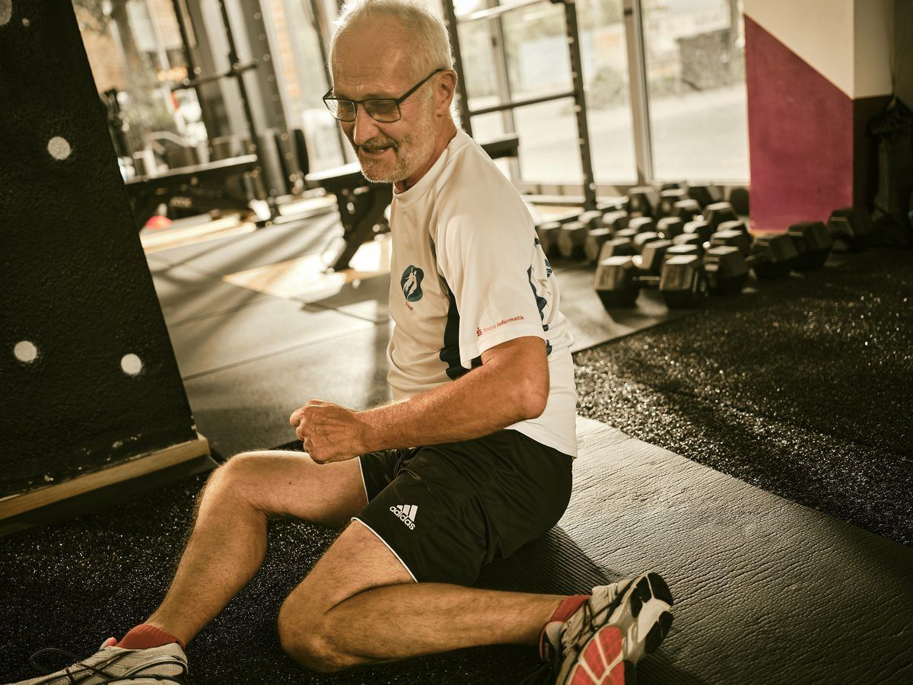

01
Säule 01
Therapie
Klassische Physio, manuelle Therapie, Lymphdrainage. Das, was bei anderen das Ganze ist, ist bei uns der Anfang.

Wir hören nicht auf, wo andere aufhören. Eine Praxis in Münster für Menschen, die mehr wollen als ein Rezept — und mehr als sechs Sitzungen, bevor sie wieder allein gelassen werden.
Sechs Termine sind kein Plan.
Sie sind ein Anfang.
Niemand sonst in Münster hat alle fünf Bereiche unter einem Dach. Therapie übergibt an Training, Training an Athletik, Athletik an Prävention — Diagnostik beobachtet den gesamten Bogen.

Klassische Physio, manuelle Therapie, Lymphdrainage. Das, was bei anderen das Ganze ist, ist bei uns der Anfang.
Wo Therapie endet, beginnt Bewegung. Strukturiert, betreut, mit Plan — keine generischen Übungsblätter.
Aufbau über das Vor-Schmerz-Niveau hinaus. Für die, die nicht nur zurück wollen — sondern weiter.
Damit die Geschichte nicht von vorne beginnt. Mit Wissen über deinen Körper, das andere Praxen nicht vermitteln.
Was dein MRT nicht zeigt, sehen wir in Bewegung. Datenbasis statt Bauchgefühl. Begleitet den gesamten Weg.
Diagnostik buchen · 149 € →„Fünf Säulen. Ein Weg."
Rezept.
Hausarzt. Sieben Minuten. „Versuchen wir mal Physio."
Sechs Sitzungen.
Weiße Wände, beige Liege, Patient als Fall-Nummer.
Entlassen.
„In sechs Wochen wieder, wenn's nicht besser wird."
"Ich war mit 42 mal Läuferin.
Ist das jetzt einfach so?— Die Frage, die niemand stellt
Die deutsche Physio-Norm behandelt die Abwesenheit von Symptomen als Endzustand. Wir nicht.
Wir glauben, das reicht nicht — nicht für die, die mit 42 mal Läufer waren, nicht für die, die nach einer OP nicht „rehabilitiert" werden wollen, sondern wieder selbst entscheiden, was ihr Körper morgen kann.
→ Unsere Methode kennenlernen
Aric Brämswig
Bevor ich 2018 REHAB FIVE gegründet habe, war ich Therapeut in einer klassischen Praxis. Sechs Sitzungen pro Patient, dann Akte zu, nächster Fall. Die meisten Menschen kamen ein halbes Jahr später wieder — mit demselben Problem, manchmal mit zwei neuen.
Ich wusste, was fehlte: die Übergabe. Therapie, die in Training übergeht. Training, das in Athletik wächst. Eine Praxis, die nicht entlässt, sondern begleitet.
Das gab's in Münster nicht. Also haben wir es gebaut — als fünf verbundene Säulen, nicht als losen Sammelpunkt. Heute haben wir zwei Standorte, ein Team von 25 und über 300 Comeback Cards. Der Anfang war nicht ein Geschäftsplan — sondern ein Frust.
Kein Stockfoto-Wartezimmer. Echte Räume, echte Geräte, echtes Team. Zwei Standorte in Münster — gebaut so, wie wir arbeiten.

Trainingsfläche.



Ankommen, bevor die Behandlung beginnt.
∗ Beide Standorte mit voller Ausstattung · Mehr im Bereich Standorte
Eine bezahlte Bewegungsdiagnostik. Rezeptfrei. Datenbasiert. Mit Bericht zum Mitnehmen — und einem Plan, der nicht nach sechs Sitzungen endet.
Dein Knie tut weh. Dein MRT sagt: alles in Ordnung. Wir zeigen dir, warum beides stimmen kann — und was eine echte Bewegungsdiagnostik aufdeckt, das ein dreiminütiger Orthopäden-Termin nicht zeigen kann.

Was dein MRT
nicht zeigt.
42 Sekunden aus unserer Praxis. Was eine echte Bewegungsdiagnostik aufdeckt — und ein dreiminütiger Orthopäden-Termin nicht.
Vier kurze Fragen. Am Ende sagen wir dir, mit welcher unserer fünf Säulen wir bei dir starten würden — und buchen direkt den passenden Termin.
Die häufigsten Wege zu uns. Klick rein, wenn dich etwas anspricht — oder buch direkt eine Diagnostik, wenn du nicht weißt, wo du anfangen sollst.
Bandscheibenvorfall, chronischer Rücken, ISG — wir bringen Stabilität zurück und halten sie.
Mehr erfahren →Vor und nach OP, Meniskus, Kreuzband, Arthrose. Strukturierte Reha mit klarem Ziel.
Mehr erfahren →Impingement, Frozen Shoulder, chronische Verspannungen. Befund, Therapie, Aufbau.
Mehr erfahren →
Bänderriss, Muskelfaserriss. Return-to-Sport — nicht „in sechs Wochen wieder", sondern wenn der Körper bereit ist.
Mehr erfahren →
Strukturierte Nachsorge, die nicht endet, wenn die Rezeptbox leer ist. Therapie → Training → Athletik.
Mehr erfahren →Lymphdrainage, Kiefer, neurologische Therapie, Migräne. Sprich mit uns — wir sagen ehrlich, ob wir der richtige Ort sind.
Mehr erfahren →Jede unserer Comeback Cards markiert einen Moment: Ein Patient hat sein Return-to-X-Ziel erreicht. Vom Therapeuten signiert, fortlaufend nummeriert, in unserer Praxis und hier öffentlich. Wenn du wissen willst, was Comeback heißt — diese Wand sagt es.

14 Monate.
Zurück auf der Promenade.
Mai 2026 · vom Therapeuten signiert
Neun Monate Schulter-Reha — über alle fünf Säulen begleitet. Erstes Spiel: 14 Punkte.
Zurück im Alltag, zurück mit den Kindern auf dem Arm.
Zurück auf der Strecke, mit besserer Bestzeit als drei Jahre vorher.
11 Monate strukturierte Reha, eccentric loading, Plan über alle Säulen.
+47 Comeback Cards seit Jahresbeginn.
Jede Karte ist ein Mensch, der nicht „behandelt" wurde — sondern zurückgekommen ist. Wenn du deine Karte willst, fangen wir mit einer Diagnostik an.
→ Diagnostik buchen · 149 €Keine Sternchen, keine Werbe-Zitate. Drei Geschichten von Menschen, die ihren Comeback bei uns gemacht haben — in ihren eigenen Worten.
"Vier Orthopäden haben mir gesagt, ich solle das Laufen aufgeben. Bei REHAB FIVE haben sie zuerst gemessen, dann erklärt, dann geplant. Sechs Monate später bin ich den Halbmarathon gelaufen — schmerzfrei.
"Ich war 2,5 Jahre auf der falschen Therapie. Die Diagnostik bei REHAB FIVE hat in 60 Minuten mehr aufgedeckt als drei Orthopäden in zwei Jahren.
"Die behandeln einen nicht wie eine Fall-Nummer. Mein Therapeut wusste nach dem Erstgespräch mehr über meinen Körper als mein Hausarzt nach acht Jahren.
Mit Rezept oder direkt zur Diagnostik. Beim Erstgespräch nehmen wir uns Zeit für deine Geschichte — nicht nur für deinen Befund.
Wir entscheiden gemeinsam: Wo fangen wir an, wo gehen wir hin? Therapie, Training, Athletik, Prävention — du weißt am Ende, was wann kommt.
Wir entlassen dich nicht nach Sitzung sechs. Wir bleiben dran, übergeben sauber zwischen den Säulen — bis zur Comeback Card.
Spezialisierungen statt Generalisten. Wir matchen dich mit der Person, die zu deiner Beschwerde passt — und die mit dir den gesamten Weg geht.
Manuelle Therapie · Athletik

Operations

B2B-Lead

Friedrich-Ebert-Str.

Scharnhorststraße

Friedrich-Ebert-Str.

Diagnostik · Athletik
Therapeut*innen
im Team.
Fundierte Artikel aus der Praxis — über Schmerzforschung, häufige Diagnosen und was die aktuelle Sportwissenschaft für deine Therapie bedeutet. Geschrieben von Therapeut*innen, nicht von SEO-Agenturen.
Warum dein Schmerz nicht immer das Problem ist und was die Neurowissenschaft heute weiß.
Artikel lesen →Eccentric Training, Belastungssteuerung und warum Ruhe meistens die falsche Antwort ist.
Artikel lesen →Wann konservativ, wann OP — und was nach der ersten Diagnose wirklich passiert.
Artikel lesen →Wie aktive Therapie und gezieltes Training die Beweglichkeit erhalten.
Artikel lesen →Der Weg über alle fünf Säulen: Therapie → Training → Athletik → Comeback.
Artikel lesen →Studien, Erklärstücke, Patient*innen-Stories — wir veröffentlichen kontinuierlich.
Zum Blog →Nein, nicht zwingend. Über die Blankoverordnung kannst du auch ohne Rezept zu uns kommen. Oder du buchst direkt eine Diagnostik-Sitzung — ohne Umweg über Hausarzt und Orthopäde.
Alle gesetzlichen und privaten. Privatabrechnung übernehmen wir direkt. Selbstzahler-Leistungen sind klar ausgewiesen, Preise besprechen wir offen vor der ersten Sitzung.
Wir haben alle fünf Säulen unter einem Dach: Therapie, Training, Athletik, Prävention, Diagnostik. Niemand sonst in Münster hat das. Wir behandeln dich nicht und entlassen dich — wir bleiben dran.
In der Regel innerhalb von 1–2 Wochen. Diagnostik-Sitzungen oft schneller, weil sie nicht auf Rezept laufen.
Dafür haben wir den REHAB FIVE HEALTH CLUB — die Premium-Adresse für Personal Training, Athletik und Diagnostik. Wir übergeben sauber, du läufst nicht zwischen Welten verloren.
Eine signierte, fortlaufend nummerierte Karte für jeden Patienten, der sein Return-to-X-Ziel erreicht hat. Marathon nach Knie-OP, Bühne nach Bandscheibenvorfall, Volleyball nach Schulter — Comeback ist ein Status-Moment, und wir machen ihn sichtbar.
Friedrich-Ebert-Straße & Scharnhorststraße. Beide mit voller therapeutischer Ausstattung, eigenen Teams und langen Öffnungszeiten.
Beweglichkeits-Selbsttest
Wo steht dein Körper aktuell? In 5 Minuten ein ehrlicher Check — vom Therapeut*innen-Team entwickelt.
Ein 5-Minuten-Selbsttest mit 12 Bewegungs-Checks, den wir aus unserer Praxis-Erfahrung destilliert haben. Du druckst ihn aus, machst die Checks, weißt am Ende, ob du Therapie, Training oder einfach mehr Bewegung brauchst.
Sofort als PDF an deine Mail · jederzeit abmelden · DSGVO-konform
REHAB FIVE ist Therapie. Für Training, Ernährung und Firmen haben wir Schwestermarken gebaut — jede mit eigener Welt, alle mit derselben Methode.
Membership, Personal Training, Athletik, Diagnostik. Säulen 02–05 als eigenständiger Premium-Bereich.
Zum Health Club →Ernährungs-Coaching und 1:1-Programme — eigenständige Schwesternmarke der Gruppe.
Zur Nutrition →BGM, Workshops, Gesundheitstage, Mannschaftstherapie. Fünf Säulen für ganze Belegschaften.
Zum Business-Bereich →